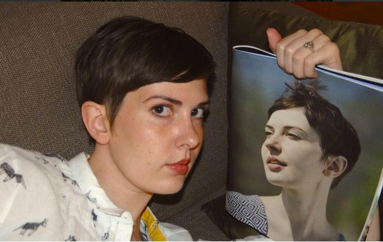

list of old issues
Drei Cafe #6
Babel / Lockwood / Fulfilled Expectations
Hi,
So when you first start meditating this thing happens where old memories come howling out of the void and smack into your brain. You're sitting down for your fifteen minutes breath-following and suddenly shit you haven't thought about for ten years apparates in your mind! This nonsense stops happening after a week or two usually. It keeps happening to me now, except in normal life, not meditation.
I reckon it's part of "Lockdown Madness". I go to make a useless cup of tea and suddenly I'm vividly recalling how, when I worked in BiLo nightfill, management would occasionally surreptitiously calculate your "boxes per hour" rate to make sure you're not slacking off, but this one manager was cool and always gave you a heads up on tracking day. Or that time I was in this university club when I was 20, and went to their conference, and then a mate found this girl's blog from the conference, where she talked about how hot the conference guys were, and I wasn't listed in her list of hot guys (hmph). Or how when I cycled to work in Amsterdam I used to stop and buy cigarettes from the same tiny corner store off Spuistraat and the proprietor had a marvellous white moustache.
I used to cringe when I thought of my younger self but not anymore. Joan Didion has a good line where she's like "it's advisable to be on nodding terms with the people you used to be" and I reckon that's solid.tacks.
I AM READING A BOOK
I am reading Red Cavalry by Isaac Babel. It turned 100 years old this year. Babel was a Russian-Jewish writer attached to a Red Army Cavalry division in the 1920 war against Poland. Red Cavalry is about that war. It's sparse and brutal, but not in the way that Game of Thrones is brutal — in the latter, the violence and war is there to excite the reader, while here it's just Babel telling you what happened in a war. Just stories about humans: a blasphemous church-painter, two officers quarrelling over a horse, a priest who pretends to be deaf, a cruel Cossack that hates him.
There is a bit where Babel is telling you about the life a meek wagon-driver nicknamed Sashka Christ, who carried Babel's luggage. Before the war Sashka Christ was a young herdsman living with his brutal stupid father. The pair had left Sashka's mother to work on a farm; there, they got an STD from the same woman. When they return to visit, it turns all of Sashka's siblings died of typhus. As Sashka falls asleep in a pile of hay, listening to his father and mother having sex, Sashka Christ imagines fine silver cords hanging from the sky with a cradle between them, and himself lying on this cradle and rocking in a pleasant breeze. Later he ends up in a war, driving a wagon, carrying a writer's trunk. That's how some guy's life went, that's one way that a human had lived.

So with this newsletter I told myself I wouldn't discuss any books less than ten years old, and wouldn't talk about any writers I had a reasonable chance of meeting (though I still hold out hope of communing with VS Naipaul's ghost: doooon't smoooke it will moan, levitating above my bed in a spectral rocking chair, look what it did to my guuuums, did I tell you about my staaaay in the english countrysideeee). In a damn-it-all iconoclasm I will shred my own rules and tell you about Patricia Lockwood (pictured posing with herself pictured), whom I have already met, and about about her good poetry book Motherland Fatherland Homelandsexuals, released in the only-just-yesterday 2014, same year Ellen DeGeneres took that selfie with the celebs at the Oscars and Flappy Bird was removed from the Apple store.
The thing with most poetry is that you don't want to get it immediately but you don't want to not get it, either. You want to (well, I want to, I'll assume we want the same thing) feel like you're trying to bond with a promising mysterious coworker. Like you're on shift with the new guy, some quiet backpacker from an Italian village whose name translates to Bad River, you can tell he's a got good stories to share, you have to figure out how to get a rapport going, so far you've just given him a limp little nod and he looked away. Anyway, Homelandsexuals is in this sweet spot where you work it out! You and your new pal Allesandro are goofin' about, haha dude no way you guys did that in Cattivo Fiume. It's all the more meaningful because it took effort. The poems are funny, Lockwood does this thing where she takes an absurd subject (e.g. Gorilla suit actors) and plays it straight, it's quite good.
I met Lockwood twice, though it was on the same day, does that count as twice? I was volunteering at Readers & Writers festival in Wellington, and we had a chat at the signing desk. Few hours later, I'm loitering outside a theatre and there goes Patricia Lockwood, in bright afternoon sunlight, walking in step with another poet I liked and a third woman I didn't recognise but I'm sure also wrote cool books. All three wore with long coats, and the wind flapped the coats behind them, they walked in perfect step, two famous cool poets and probably a third, although for all I know the third lady was someone's cousin who did accounting for laundromats.
Patricia turned to me and said "oh it's you hi". I said something, and she replied, and then off she strode with her cool crew. What I'd said I can't remember (maybe Involuntary Lockdown Memory Recollection will return it to me). I guarantee I'd have been desperate to crack a charming joke, but I've a patchy record with with wit under pressure (yes really). If I'd squeaked out something mortifying, though, my brain wouldn't have let me forget it; I comfort myself by concluding what I'd said must've been polite and forgetful. Patricia Lockwood if you ever reads this and recall what I said please please don't tell me.
IMAGINING SOMETHING WILL BE GOOD AND THEN IT'S GOOD
Few years back I did the Modern & Contemporary American Poetry course on Coursera. What you basically do is watch videos where a kindly professor and his PhD students discuss poems. You end up having favourite students, sometimes your top poetry bro or sis says a good line and you want to reach through the computer monitor and hi-five them but you can't, they don't even know you exist. It reminds me of this line I heard, "podcasts are porn for friendships", it's incorrect but comes from a correct place. Halfway though the course was a "fun video" where the professor walks around with a camera (phone?) and all the students are sitting around in this house on university that doubles as their department and they're all like "oh hi professor I didn't see you come in ha ha yes I'm just discussing Whitman with Alison here". God did I want to be Alison!
A couple years later I did a Creative Writing Masters, in my head I really built it up, "it's going to be as cool as that internet poetry course, but in real life!" and you know what it was. We even had a department-house to hang out in. It's superb when you build something up in your head and it pays off. Like, you have a dream of doing something and you're all "man I better not get excited about this, what if it isn't as good as I imagine it will be" but then it is as good. It's rather emboldening.
PERSONAL LIFE
I'm really into this dried shrimp and rice-cake recipe, I make it every week, text me if you want it!
Hope you're good bye!
Bye,
Drei
6 Sep 2020
If you missed old issues they are up on http://dreicafe.com! If you like this newsletter, tell your friends about it, it's nice to have readers, there's a signup form on that site! Thanxxx
© 2020 Drei Cafe